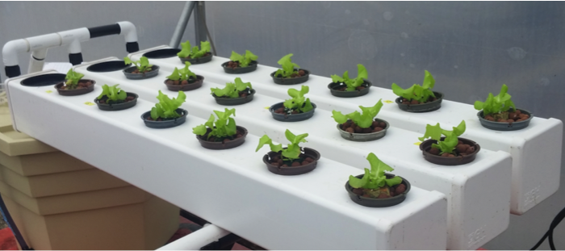
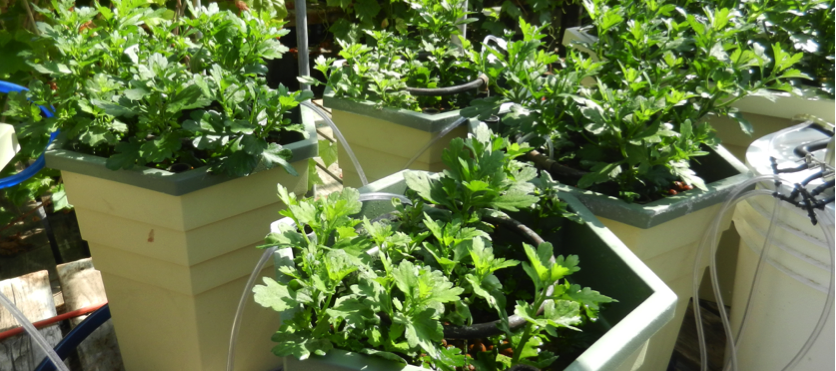
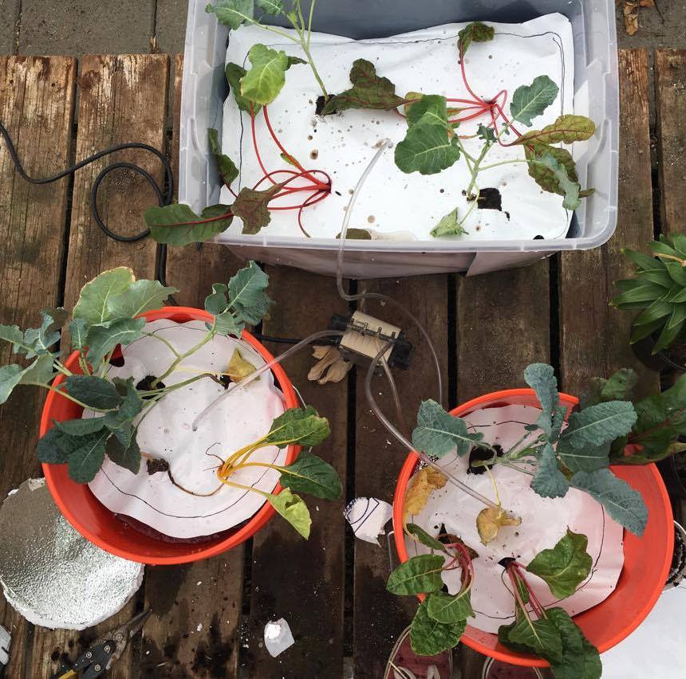
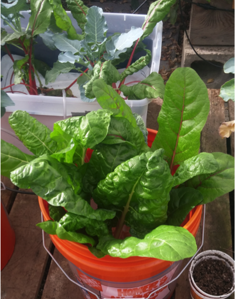

Hydroponics
Hydroponics is the practice of growing plants in a soilless
environment, at a much higher rate than traditional agriculture. The plants
are fed by nutrients added to the water, which fulfill all of the plants
nutritional needs in a controlled environment.
The types of crops that flourish in the community of Mottas, Teresopolis are primarily leafy greens. we can demonstrate that it is possible to grow crops like these in hydroponic systems, a community transition to hydroponic systems will prove beneficial for a multitude of reasons.
The types of crops that flourish in the community of Mottas, Teresopolis are primarily leafy greens. we can demonstrate that it is possible to grow crops like these in hydroponic systems, a community transition to hydroponic systems will prove beneficial for a multitude of reasons.


Why Hydroponics?
Using
chemical fertilizers in soilless culture allows for growth of crop in a
controlled and calculated environment that directly supports plant growth. The
growth rate on a hydroponic plant can be 30-50 percent faster than plants grown
with traditional soil based agricultural methods (“Greentrees Hydroponics.”)
Hydroponics operates as a closed recirculation system, therefore allowing the
grower control of the nutrient solution to ensure all elements of growth are
present to produce a nutritionally superior vegetable product (“Greentrees
Hydroponics.”).
In addition, the yield is greater due to a higher control of lighting, temperatures, nutrient flow, and pest management. Generally, this requires less space and therefore the ability to grow a higher density of plants. In addition, growing mediums and nutrient solutions may be recycled or reused in correlation with aquaponics, which is a technique used to grow fish and vegetation. Lastly, this method of growth provides superior taste and quality of vegetable. It is also an entirely environmentally friendly process.
In addition, the yield is greater due to a higher control of lighting, temperatures, nutrient flow, and pest management. Generally, this requires less space and therefore the ability to grow a higher density of plants. In addition, growing mediums and nutrient solutions may be recycled or reused in correlation with aquaponics, which is a technique used to grow fish and vegetation. Lastly, this method of growth provides superior taste and quality of vegetable. It is also an entirely environmentally friendly process.
Our Designs
The following is a visualization of a hydroponics system using recycled
gutters that could be implemented in Mottas.
Designed by Nick Alvarez.
Designed by Nick Alvarez.
Low-cost hydroponic systems made of
recycled materials

Chard and kale after first being moved to hydroponic systems
Plastic tub and bucket containers
4/26/17
Plastic tub and bucket containers
4/26/17

Same systems after less than a month.
5/16/17
5/16/17